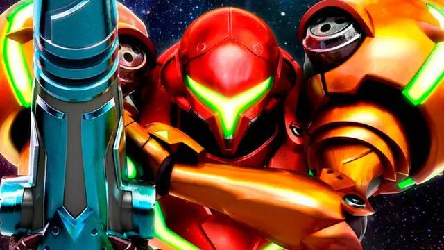
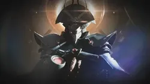
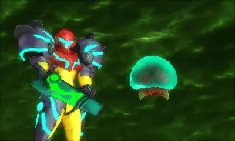

Narra las misiones de la cazarrecompensas Samus Aran, quien trata de proteger a la galaxia de las depredaciones de los Piratas Espaciales y sus intentos de aprovechar el poder de las criaturas llamadas Metroid, una raza de organismos depredadores que tienen la habilidad de obtener la energía de diversos seres vivos.
Los Piratas Espaciales son una especie de raza interestelar maligna que se originó en el Planeta Pirata. Durante mucho tiempo conquistaron varios planetas, atacando y asesinando a todo ser que se interpusiera en su camino. El éxito militar de los Piratas Espaciales comenzó cuando estos, mientras conquistaban la población del planeta SR388, descubrieron a la raza Metroid, organismos depredadores que se asemejan a medusas y que poseen la habilidad de absorber y apoderarse de la energía de un ser vivo, causando la muerte de ese. Los Piratas se apoderaron de ellos y los usaron como soldados e hicieron uso de su energía. Debido a ello, la Federación Galáctica, el gobierno de la galaxia, decidió crear una policía que originalmente era asignada para enfrentar a los Piratas Espaciales, pero poco después para mantener la tranquilidad en la galaxia.
Mientras tanto, Samus Aran nació como un ser humano normal, y vivió su infancia con su familia en el planeta K-2L. El planeta fue invadido por los Piratas Espaciales, quienes se encontraban en busca de recompensas. El líder de los Piratas Espaciales, Ridley, asesinó a la mayoría de la población de la colonia de Samus, incluyendo a sus padres, y posteriormente destruyeron dicho planeta. Huérfana, Samus fue encontrada por una raza alienígena-pájaro conocida como los Chozo, que la trasladaron a su planeta de origen, Zebes. Tras ello, fue infundida con ADN de los Chozo para darle una fuerte resistencia a ambientes exteriores, y después la entrenaron como guerrera y le otorgaron uno de los artefactos de la raza alienígena, un exoesqueleto mecánico denominado como Power Suit, el cual biológicamente se conecta con su mente y cuerpo.
Seguido esto, se alista en la Policía de la Federación Galáctica, cuya misión es proteger la galaxia y promover la paz en esta. Samus comienza a ganar prestigio por parte de la Federación, mientras completa misiones exitosamente protegiendo la galaxia y evitando los intentos de los Piratas Espaciales de aprovecharse del poder de diversos organismos, y asimismo, busca venganza hacia ellos por la catástrofe ocurrida durante su infancia. Tras descubrir a los Metroides y su conexión con los Piratas, la trayectoria de Samus frecuentemente se enlaza con ellos. Abandona la Policía debido a que su oficial comandante Adam Malkovich sacrifica a su hermano menor para salvar al escuadrón y otros trescientos refugiados cuando una gran unidad de fusión estaba a punto de explotar.
[Metroid](./img/03.png)